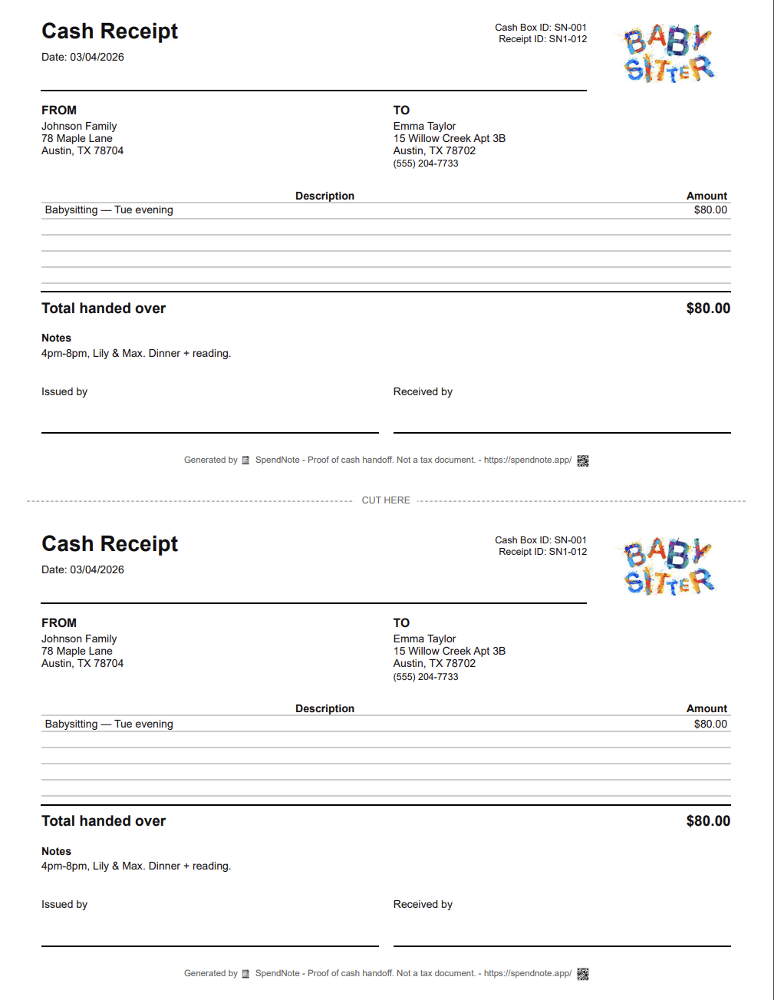
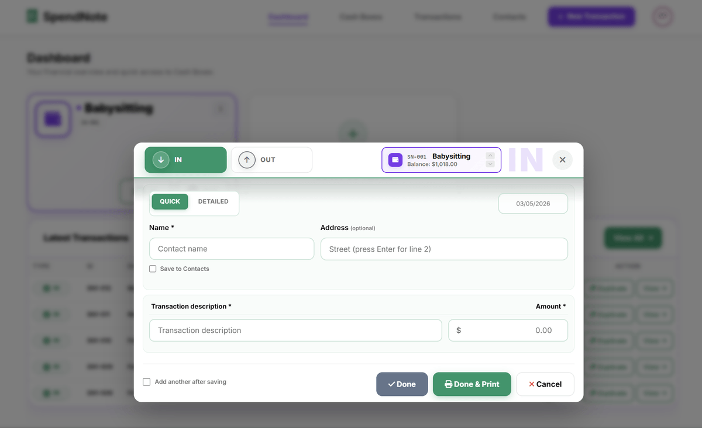
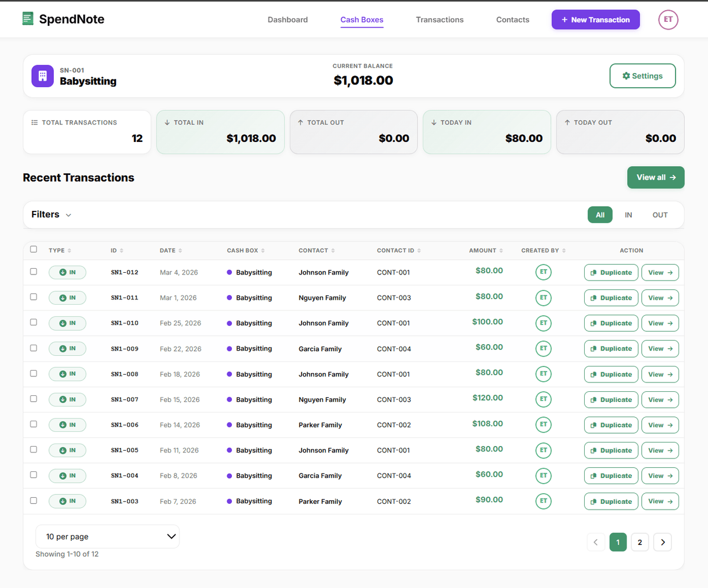

Babysitter Cash Payment Receipt
You sit for the Garcias on Tuesdays, the Johnsons on Thursdays, and a backup family on weekends. All cash. Three weeks in, nobody remembers if last Thursday was paid. SpendNote logs every cash payment in 30 seconds — one searchable history per family, on your phone.

Make a babysitting payment receipt right now
Fill in the fields, then print two copies or save it as a PDF. Free, no account, nothing to install.
Why a Babysitter Needs a Receipt for Every Cash Session
You sit for the Garcia kids every Tuesday and Thursday. They pay you $80 in cash each time. After a month, Mom hands you $80 and says “this covers last Thursday too.” Did she already pay for that one? Without a record, it’s your memory against hers.
Now multiply by 3 families, 2 different rates, and a backup sitter who covers when you can’t. By the end of the second month nobody can keep it straight from memory — not you, not the families, not your bank account.
A 30-second log per payment ends the guessing game. You pull up the family on your phone and show the line: Thursday March 7, $80, Garcia. Conversation over.
Heads-Up: This Is for Sitters Who Deal with Cash Often
Be honest with yourself: SpendNote is a paid tool from $15.83/month and earns its keep when you have several families, several rates, or several months of cash payment history to keep straight. If you sit for one family every other Friday, the Notes app or a single Excel row will do — don’t buy a tool you don’t need.
Where SpendNote pays for itself: the multi-family weekly sitter, the cash-paid nanny who needs to settle up at month-end, and the household manager running 3-5 sitters across one family.
Who This Is For
Regular Multi-Family Babysitters
You sit for two or more families on a recurring schedule — weekly, twice-weekly, or weekend coverage. Cash at the end of each session, sometimes different rates per family. A receipt per payment means you always know where you stand with each family: what’s been paid, what’s outstanding, what next month looks like.
Nannies Paid Weekly in Cash
Larger amounts, regular schedule, often the same family for months or years. A weekly receipt gives you a clean record of every paycheck cycle — especially useful when a family asks for a year-end summary, or when there’s an end-of-month settle-up after a holiday week or sick days.
Household Managers Tracking Multiple Sitters
You run a busy household with a regular weekday nanny, two backup sitters for evenings, and the neighbour’s teen for emergencies. Each saved as a contact, each cash payment logged in seconds. One searchable history with every sitter, every payment, every date — no spreadsheet, no envelope of receipts. (For an occasional Friday-night sitter, you don’t need this — the Notes app is enough.)
Tutors, Dog Walkers & Other Cash-Paid Helpers
If you also tutor, walk dogs, clean houses, or do any other recurring cash-paid work for the same families, the same SpendNote contact serves all of it — one searchable history per family across every kind of service.
What a Babysitter Cash Receipt Should Include
- Amount received — The exact cash you were paid
- Family name — Who paid you
- Date — When the payment happened
- Session note — What the payment covered (e.g., “Friday 6–10pm” or “weekly nanny rate”)
- Your name — Who received the cash
SpendNote fills in date, time, and receipt number automatically. You enter the amount, pick the family, optionally add a note. Done in under 30 seconds, with a printable two-copy receipt either side can save or share.
How It Works in 30 Seconds
Step 1: After the family pays you in cash, open SpendNote in your phone’s browser.
Step 2: Tap “IN” (you’re receiving cash). Enter the amount and select or add the family as a contact.
Step 3: Done. The receipt is generated instantly — print it, email it to the family, or just keep the digital record. Next session for the same family is even faster — the contact is already saved.

If you sit for multiple families, each one is saved as a separate contact. You can pull up the complete payment history for any family in seconds — perfect for the “did we already pay you for last Thursday?” conversation.

Log Tonight's Babysitting Payment in 30 Seconds
One quick receipt after every cash session — both sides keep a copy, one searchable history per family. No template, no envelope of paper slips. Free to start, no credit card.
Log Tonight's PaymentImportant: SpendNote receipts document the cash handoff moment — what was paid, to whom, when. They are not tax documents, not invoices, and not Form W-10, Form 2441, or any other IRS document. If the sitter needs to report babysitting income, or if a family wants to claim the Child and Dependent Care Credit or use a Dependent Care FSA, those are separate processes handled by your regular tax software, a tax professional, or a dedicated nanny payroll service. SpendNote keeps the operational cash record underneath.
This Is Not a Tax Document — Especially Not for the Child Care Credit
Let’s be very clear about what SpendNote does and does not do:
- It does: Record that you received cash from a specific family on a specific date, with a printable two-copy receipt and a searchable history per family.
- It does not: Generate invoices, calculate taxes, produce Form W-10 (sitter’s TIN/SSN for the parent’s records), produce Form 2441 (US Child and Dependent Care Credit), produce 1099 or Schedule H (nanny payroll), or substitute for a Dependent Care FSA reimbursement form.
If you (the sitter) need to report babysitting income, that goes on your own tax return. If a family wants to claim the Child and Dependent Care Credit, you provide name, address, and TIN/SSN on Form W-10, and the family files Form 2441 with their tax return. SpendNote does not handle either step — use a tax professional, your normal tax software, or a dedicated nanny payroll service for that layer. SpendNote just makes sure neither side forgets what was paid and when.
Frequently Asked Questions
Should a babysitter give a receipt for cash payments?
Yes — especially if you sit for several families on a recurring schedule. A receipt protects both sides, but it solves the sitter’s problem more often: “wait, did we already pay you for last Thursday?” three weeks into the schedule. A 30-second log per payment removes the back-and-forth at month-end.
Can a babysitter track cash payments from multiple families?
Yes. Save each family as a contact. Every cash payment received is logged in under a minute with the family name, date, amount, and an optional session note (for example “Friday 6–10pm”). The full history is searchable per family — useful when the Garcias and the Johnsons both pay the same weekly rate and you need to remember which Thursday was already covered.
Is a babysitter cash receipt a tax document?
No. A SpendNote receipt is proof that cash changed hands on a specific date — not a tax document, not an invoice, and not an official accounting record. If you need to report babysitting income, or a family wants to claim the Child and Dependent Care Credit (US Form 2441) or use a Dependent Care FSA, those go through a tax professional or your regular tax software, not SpendNote.
Can a household manager use SpendNote to track payments to multiple sitters?
Yes — that is the household-manager use case. If you have a regular weekday nanny, two backup sitters for evenings, and a neighbour’s teen for emergencies, save each as a contact and log every cash payment in seconds. One searchable history, every sitter, every date. Note: SpendNote is a paid tool from $15.83/month — the household-manager use case earns its keep when you have several recurring sitters and several months of history. For an occasional Friday-night sitter, a Notes app or a single Excel row is enough.
Does this help with the Child Care Tax Credit (CCTC) or Dependent Care FSA filing?
Indirectly only. SpendNote keeps the operational cash payment record — what was paid, to whom, when. The Child and Dependent Care Credit (US IRS Form 2441) and Dependent Care FSA reimbursement both require additional documents SpendNote does not produce: the sitter’s name, address, and TIN/SSN on Form W-10, plus the family’s qualifying expense calculation on the tax return itself. Use SpendNote for the cash record; use your tax professional or tax software for the credit claim.
Does this work for tutors, nannies, dog walkers, and other cash-paid service providers?
Yes. Any recurring cash-paid service uses the same workflow. Nannies, tutors, music teachers, house cleaners, dog walkers, personal trainers — the receipt format is identical regardless of the service. The contact-per-client setup means one searchable history across every kind of cash-paid work.
Also see: Tutor cash payment receipt, Handyman cash payment receipt, Contractor advance payment receipt, Proof of cash payment received, Cash handoff receipt, Small business cash receipt, How to track cash payments.
Try everything. Pay nothing for 14 days.
Then, if you love it
- Unlimited receipts and cash boxes
- Your logo on every receipt
- Print, PDF & CSV export
Every cash handoff, recorded and signed.
Set up in two minutes. First receipt in thirty seconds. Every entry saved and searchable.
Start my free trial